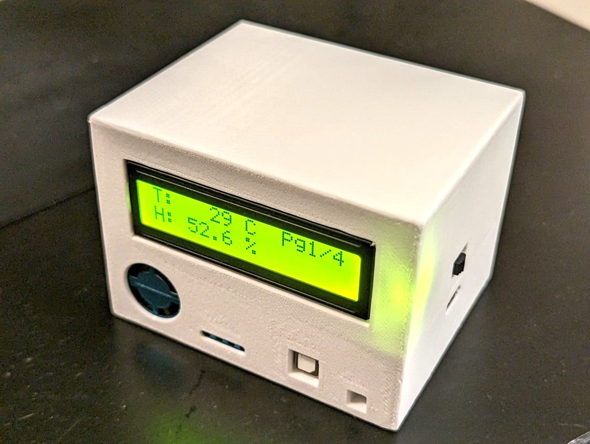
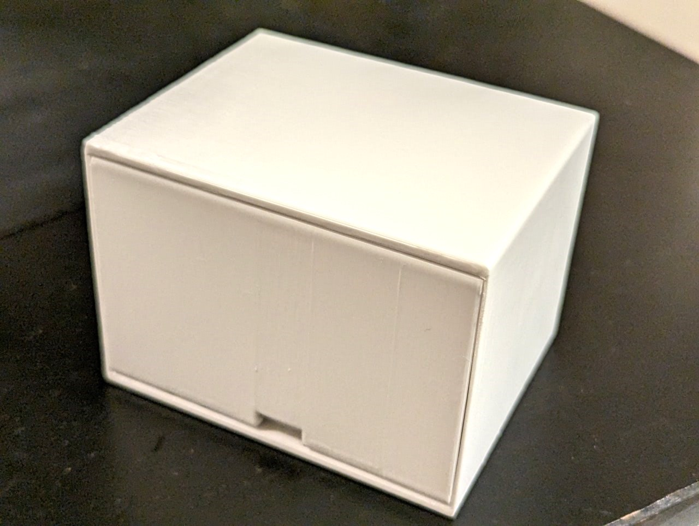
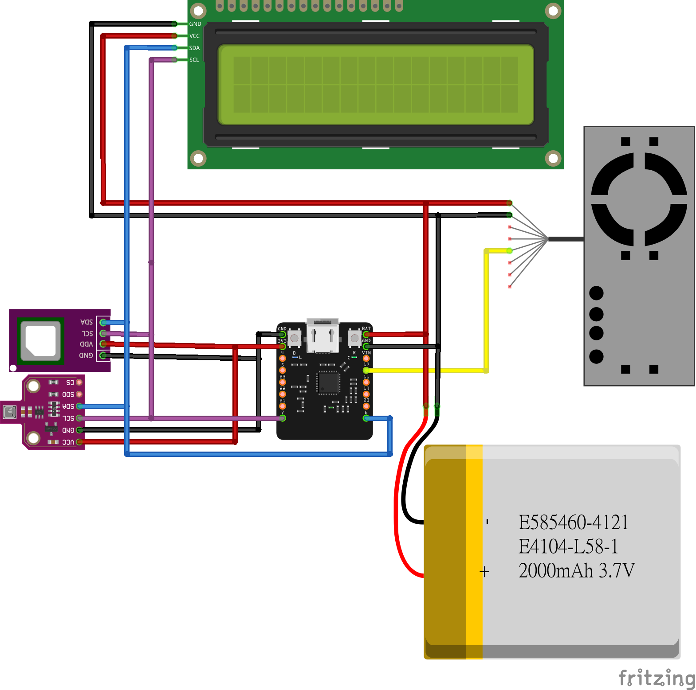

智能居家環境監控系統
一個完整的、基於 Beetle ESP32-C6 的多功能環境監測解決方案。整合溫濕度、氣壓、CO₂ 及粉塵監測，以 MicroPython 實現固件程式，支援多種顯示屏並內置數據記錄功能。


核心功能特性
多個智能感測器與靈活的顯示設置
環境四合一監測
BME680 感測器同時測量溫度、濕度、氣壓及 VOC 空氣品質
- ✓ 溫度精度：±1.0°C
- ✓ 濕度精度：±3% R.H.
- ✓ 氣壓精度：±0.6hPa
CO₂ 濃度監測
SCD41 光學 NDIR 傳感器檢測室內 CO₂ 水平
- ✓ 量程：0-40000 ppm
- ✓ 低功耗設計
- ✓ 無需預熱
粉塵顆粒監測
PMS5003 雷射感測器實時監測空氣品質
- ✓ PM1.0 / PM2.5 / PM10
- ✓ AQI 指數計算
- ✓ 自動校準
多屏幕支援
支援 SH1106 OLED 或 LCD1602 液晶顯示
- ✓ 3-4 頁面自動循環
- ✓ 自定義刷新率
- ✓ I2C 通訊接口
數據記錄與分析
內置 CSV 數據記錄功能便於後期分析
- ✓ CSV 格式導出
- ✓ 時間戳記錄
- ✓ 批量查詢
電源優化
智能省電模式大幅延長續航時間
- ✓ 深度睡眠模式
- ✓ 適應性刷新
- ✓ 低功耗設計
硬體組件列表
| 主開發板 | Beetle ESP32-C6（或 ESP32-C6-DevKitM-1） |
| 處理器 | ESP32-C6 RISC-V 160MHz + 高性能協處理器 |
| 無線連接 | WiFi 6、Bluetooth 5.3、Zigbee 3.0、Thread 1.3、Matter |
| 環境傳感器 | BME680（溫度、濕度、氣壓、VOC） |
| CO₂ 傳感器 | SCD41（光學 NDIR，量程 0-40000 ppm） |
| 粉塵傳感器 | PMS5003（雷射顆粒計數，PM1.0/PM2.5/PM10） |
| 顯示屏（選項1） | SH1106 OLED（128x64，I2C 接口） |
| 顯示屏（選項2） | LCD1602（16x2，I2C 背光模組） |
| 通訊協定 | I2C（環境 & 顯示傳感器）、UART（粉塵傳感器） |
| 程式語言 | MicroPython 1.20+ |
| 功耗 | 實時監測：~200mA；休眠模式：<10mA |
| 外殼 | 3D 列印自製設計（STL 模型自選） |
系統架構與代碼組織
硬體接線圖 (PCB Layout)

模塊設計
/main
├── boot.py # 啟動引導
├── main.py # 主程式入口
├── config.py # 配置參數 (GPIO、I2C等)
├── bme680.py # BME680 驅動程式
├── scd41.py # SCD41 CO₂ 傳感器驅動
├── pm25.py # PM2.5 傳感器驅動
├── displays.py # 顯示屏統一接口
├── uart_debug.py # 調試工具
└── test_sensors.py # 單元測試GPIO 引腳映射
| 接口 | ESP32 PIN |
| I2C SCL | GPIO 7 |
| I2C SDA | GPIO 6 |
| UART RX (PMS5003) | GPIO 4 |
| UART TX | GPIO 5 |
I2C 設備地址表
| 設備 | 地址 |
| BME680 | 0x76 / 0x77 |
| SCD41 | 0x62 |
| OLED (SH1106) | 0x3C / 0x3D |
| LCD1602 (PCF8574) | 0x27 |
快速開始指南
項目優勢
✓ 開源完整代碼
所有源代碼都是開源的，包含完整的驅動程式、測試工具及配置範例。易於二次開發與定制。
✓ 低功耗設計
支援深度睡眠模式與適應性刷新，大幅降低功耗，適合電池供電的長期監測應用。
✓ 模塊化架構
採用模塊設計，易於添加新的感測器或顯示屏。每個驅動程式都可獨立測試與替換。
✓ 完整文檔
包含快速開始、安裝配置、API 參考、架構設計及故障排除等多份詳細文檔。
✓ 數據記錄與分析
內置 CSV 數據記錄功能，方便導出至 Excel 或其他分析工具進行長期趨勢分析。
✓ 可擴展性
支援 WiFi 雲上傳框架，可輕鬆集成 MQTT、HTTP 等協定實現遠程監控功能。
應用場景
家庭環境監控
實時掌握臥室、客廳、辦公室等空間的溫濕度與空氣品質，優化通風與舒適度。
實驗室環境控制
監測實驗室溫濕度與空氣品質，確保實驗條件一致性，便於數據重現。
工業應用
監測倉庫、製造廠房等工業空間的環境參數，實施設備預防性維護。
教育研究
學生通過本項目學習嵌入式開發、傳感器集成、數據可視化等多個領域知識。
種植與養殖
監測溫室、養殖場環境，優化植物生長或動物健康所需的環境條件。
醫療保健
監測病房、隔離室空氣品質，支持健康室內環境管理與防控需求。